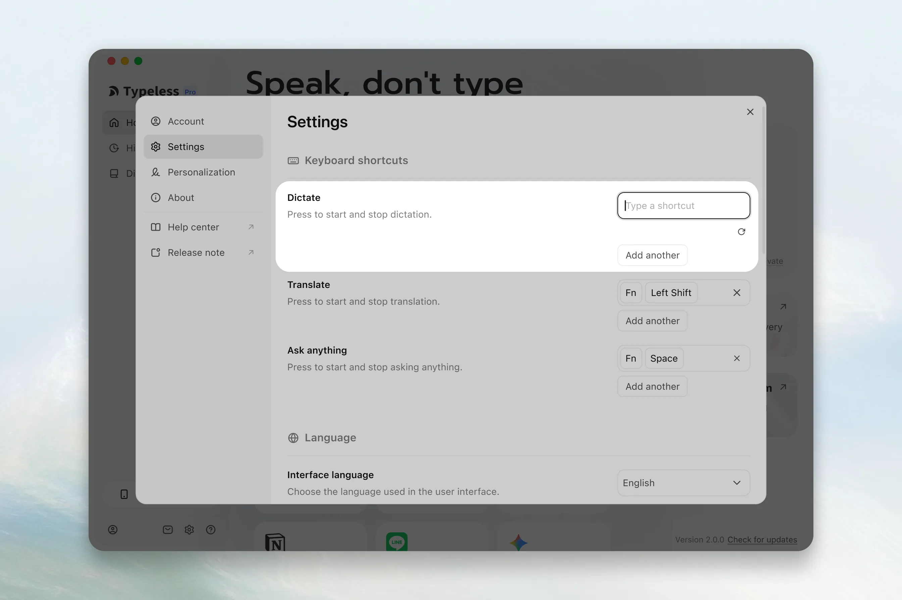

Typeless 这一年：从 Beta 到日常工具，一款语音输入法的迭代速写
从 2025 年 8 月的 V0.1.0 Beta 到现在，Typeless 经历了什么变化？我作为一个长期观察者，从迭代节奏里读出了这款产品的成长逻辑和它的边界。
现在打开 Typeless，按住说一句话，几秒后屏幕上出现的不是"语音转文字"那种干巴巴的原文记录——它是整理好的段落，标点符号都帮你打了，甚至你中间卡壳、重复说的那句废话也被自动删掉了。这个体验在今天已经不稀奇，但如果你回到一年前的 Beta 版，就会发现这中间隔了好几个大版本的距离。
我是从 V0.1.0 Beta 开始用Typeless官网介绍的这款语音听写工具的——那段时间正好在写长文档，传统输入法敲得手指疼，就试了。那时候它还只有 macOS 端，一个菜单栏小图标，按 Fn 键就能触发。说实话第一次用的时候没抱太大期望，毕竟语音转写的坑踩过不少：识别率低、标点乱、还要自己整理格式。但 Typeless 第一次给我的成稿确实让我愣了一下——不是完美，而是"居然能这样"的那种感觉。
来路：从 Beta 到多平台的半年
样本文档里明确提到的第一个版本节点是 V0.1.0 Beta（2025 年 8 月），这是 macOS 桌面端稳定迭代的起点。但文档没有更早的历史——我猜在 Beta 之前应该有几轮内部或者小范围测试，只不过官方没公开。从"样本文档没提早期版本"这件事本身，也能看出这款产品的一个特点：团队不太喜欢炒概念，更倾向于先把一个平台做好再往外扩。
V0.1.0 Beta 之后的几个版本，能从文档的功能痕迹里反推出来：
首先是听写历史记录。最早的版本应该是"说完就没了"的状态——我记得自己 Beta 初期用的时候，想找回上次口述的内容得重新录一遍。后来某一个小版本加了历史记录，而且设计得很克制：默认本地存储、保留时长自选（从 24 小时到永久都有，甚至有"从不"选项）、支持单条删除和全部清空。这个功能看似简单，但背后其实是产品定位的一次微调——Typeless 从一个"即时转写工具"变成了"有记忆的协作助手"。

然后是自动反馈闭环。这个功能藏得比较深，在"个人词典"的"自动添加"分类里。简单说就是：你每次听写后手动改错的地方，Typeless 会默默记下"错了 → 改对了"的对应关系，下次遇到同样的输入直接用正确写法。这个机制的厉害之处在于它完全不打扰用户——不需要手动配置词条，不需要专门花时间训练，正常用就好。几周之后你会发现，你常用的那些术语、人名、项目代号，Typeless 基本都能直接写对。我自己的自动添加词典现在有三十多条，全是那段时间写文档时积累下来的专有名词。
再往后是平台扩展。下载渠道同步更新，Windows 桌面端出来了，移动端也上线了——文档站里能看到 Android 和 iOS 的使用指南。平台扩展这件事本身不稀奇，但 Typeless 的做法比较有意思：它不搞"全平台同时首发"，而是先把 macOS 端打磨到位（快捷键、辅助功能权限、菜单栏状态、跨应用注入，一套体验做完整了），再往其他平台推。Windows 端的快捷键换成了 Right Alt 系列，移动端的交互逻辑也跟桌面端不一样，但核心的"按住说 → 整理好的文字出来"这个体验是统一的。

还有两个硬限制值得单独提一下，因为它们从第一天到现在就没变过：单次听写 9 分钟上限和必须联网。9 分钟这个数字不是拍脑袋定的——Typeless文档里明确说，这是云端大模型处理 9 分钟音频刚好不会超时。超过 8 分钟会有 60 秒倒计时提醒，到顶后自动存进历史记录，不会白说。必须联网这件事，Typeless 官方的解释也很坦诚：本地能跑的 Whisper 等模型虽然离线可用，但准确率和语义理解能力远不如云端大模型。这个取舍我个人是认同的——如果一款语音工具的核心卖点是"用大模型帮你整理成稿"，那离线就不是它的场景。
规律：团队一直在死磕什么
把这些版本节点串起来看，能隐约看到 Typeless 团队的几个优先级：
第一，"成稿质量"永远是第一位的。 从 Beta 版到现在，所有版本迭代里最核心的改动永远和"听写出来的文字能不能直接用"有关——自动反馈闭环是让成稿越来越准，历史记录让你可以重试不满意的成稿，语言变体设置让成稿的格式符合你的偏好（简体/繁体、英文大小写、数字格式）。他们没有在"炫技"上花太多功夫——比如没有跟风做"实时字幕"或者"多语种同声传译"这类看起来很厉害但实际场景有限的功能。
第二，克制。 不管是历史记录的"从不"保留选项，还是自动反馈的"默认关闭、手动才启用"，还是平台扩展时的"一个一个来"，都能感觉到团队在刻意控制功能密度。这在今天的软件产品里反而少见——大部分竞品都在疯狂堆功能、做付费墙、搞会员体系，Typeless 的文档站里甚至没有出现过"升级 Pro"这类字样。
第三，边界感。 样本文档里反复提到"云端处理"和"本地存储"的边界——原始音频处理完即弃，历史记录只存在设备本地，自动学习的词典也是个人专属。这种边界感不是技术限制，是产品决策。它意味着 Typeless 不会把你的听写内容拿去训练模型，不会同步到云端做分析。在隐私这件事上，他们的态度很明确。
当然也有他们一直没做的事情。离线模式——从第一天到现在就没有，而且官方的口径一直是"目前没有、可能也不会有"。多设备同步——个人词典和历史记录都不跨设备同步，换手机就得重新积累。这两件事其实是有关联的：如果他们要做离线或者跨设备，就得改变"云端处理、本地存储"这个架构，而这个架构恰恰是他们成稿质量和隐私边界的基础。所以这些"未做"的功能，与其说是"还没来得及做"，不如说是"刻意不做"。
预判：接下来会怎么走
从这一年的迭代规律推，我觉得接下来 Typeless 大概率会走这几条路——先声明这是我的推测，不是官方口径：
成稿质量的继续深挖。 自动反馈闭环目前还比较粗糙——它只学习"词"的层面，不学格式，不记翻译偏好。未来可能会出现更智能的学习机制，比如记住你习惯的段落结构、常用的排版格式、甚至你说话的语气偏好。但这条线的天花板其实是云端大模型本身的能力上限——Typeless 能做的是在模型能力之上做定制化，而不是突破模型本身。
平台覆盖的补全。 macOS、Windows、Android、iOS 都有了，但 Linux 还没有，iPadOS 也只是勉强兼容。如果团队继续按"一个平台一个平台打磨"的节奏，这两个平台迟早会跟上。但我猜他们不会在浏览器端做一个纯 Web 版——因为跨应用注入文字这件事，浏览器沙箱里做不了。
付费模式的明确。 目前 Typeless 看起来还是免费的，但大模型调用是有成本的——每一次听写、每一次随心问都在烧钱。要么是有投资方在撑着，要么是有还没公开的商业化计划。如果要做付费，最自然的方式可能是"额度制"——免费用户每天有一定的听写次数，高频用户付费解锁更多。但我希望他们不要做"免费版限速"或者"免费版成稿质量下降"这种杀鸡取卵的事。
而那条"刻意不做"的线——离线、跨设备同步、炫技功能——我猜他们还是不会碰。这不是保守，是产品定位的坚持。Typeless 从第一天起就不是"全场景语音工具"，而是"云端大模型驱动的高质量听写助手"。所有迭代都是往这个方向加深，没有偏离过。
写在最后
说起来我用 Typeless 已经快一年了，从最开始写长文档到现在日常写邮件、写代码注释、甚至偶尔口述点碎碎念，它已经变成了一个"存在但不会被特别注意"的工具——就像一把好用的键盘或者一双舒服的拖鞋。好工具的终极形态大概就是这样：你不会每天想起来夸它，但一旦拿走就会觉得不习惯。
这一年的迭代让我对这款产品建立了信任——不是对技术的信任（云端大模型哪天真崩了我也没办法），而是对团队做产品的态度的信任。他们知道自己在做什么、知道什么该做什么不该做、知道怎么在有限的资源里先把最重要的事做好。
如果你也在用 Typeless，不妨打开历史记录翻翻最早的几条听写——对比一下当时和成稿和今天的成稿，你能直观感受到这一年里它变好了多少。这款工具的详细版本记录和功能拆解，我分别在GitHub、Gitee、GitCode都做了同步，国内访问不顺畅的时候换个源就行。